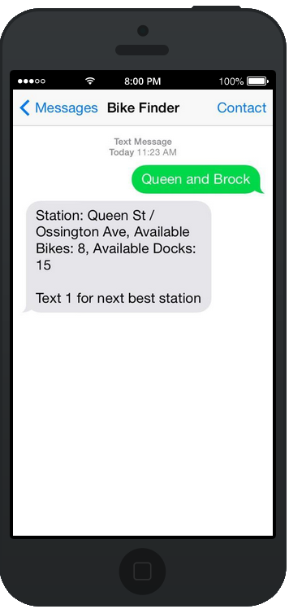
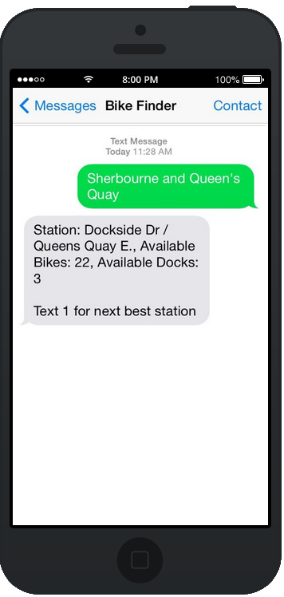
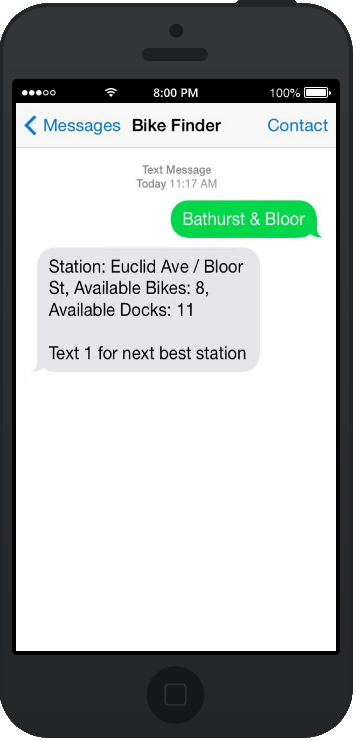

|

Service Design Bike Finder was designed as an answer to data accessibility and equal opportunity needs in Bike Share's operations. |

Focus The creators believe that Bike Share information should be available to riders who do not own a smartphone or choose not to use the existing app. |

Costs Bike Finder was created as a low-cost tool to quickly and easily help riders locate their nearest station and determine the availability of bicycles and docks. |
“Love this so much I might sell my car.”
“I don't need a smart phone to use this, simplicity is key for this service!”